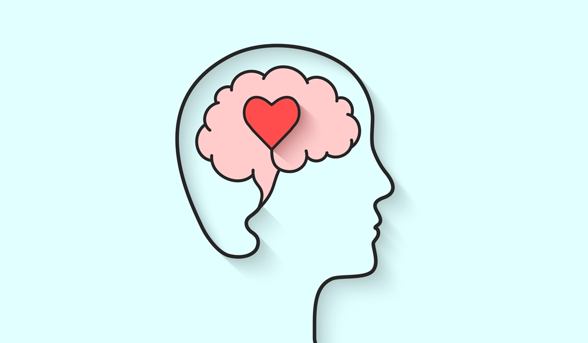
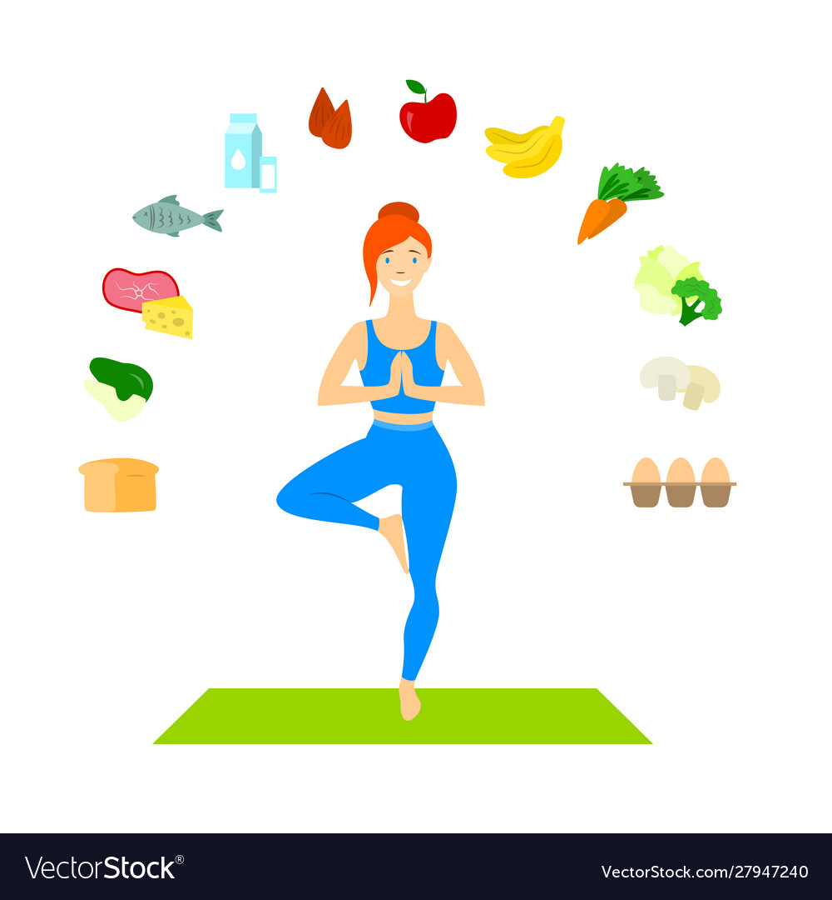
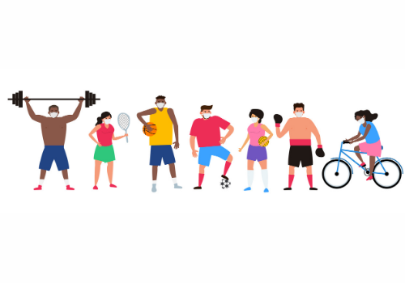

Watch Video to Know More :>>>>>

There are probably no greater blessings than being born with zero health issues, but one must not take their good health for granted. There are very few people who understand that riches in terms of wealth would mean nothing if their health is on the line.
Illnesses occur for many reasons and sometimes help us build our immunity as well. But many times, these illnesses can also turn fatal or harm us in an unrecoverable way. Therefore we must treat our body like a holy temple and invest time and energy behind your physical and mental health.

Mental health is also responsible for many deaths, and we often forget to take care of it and are scared to seek help because of some stupid reason. But we must not do that to seek help at the earliest possible condition will give the doctor time and give you enough time for a slow recovery. Living shouldn’t just be about existing or surviving, instead of for living correctly, one needs to follow a healthy lifestyle.
A healthy lifestyle necessarily doesn’t mean we have to give up on the delicious junk food; rather, it about us understanding how bad it is for you and finding healthier alternatives for the food to enjoy. A balanced diet will have all those components like water, protein, carbohydrate, etc. in the right quantity that our body needs to become healthier. A healthy diet will also help you have disease-free health and life.
Watch Video to Know More :>>>>>
Keeping fit is engaging your body in activities that maintain it in good condition in terms of health as well as physical appearance.
Ways to keep fit include eating healthy food, exercising and avoiding harmful substances in the body.
How to stay fit and healthy? Health and fitness play an important role in our overall wellbeing. There should be a good balance between mind, body and soul. The following activities are suggested for health and fitness.
Play games and sports. When the body is active, it is able to metabolize well and keep in good shape. Sports and games allow the body to use op energy, increase blood circulation and eliminate harmful fats in the body.
Participate in yoga. Yoga has got a lot of fitness benefits such as flexibility, burn calories, increase blood flow, boosts immunity, lowers blood sugar and so much more. All these help to keep the body in good shape.

Eat healthy foods. What we choose to eat plays a very major role in our fitness. Proper food selection leads to eating healthy. Some of the best foods to eat so as to remain fit are vitamins found in vegetables and fruits, proteins found in whole grains and lean meat. Eat foods that have less oil, since too much oil can increase cholesterol levels which is harmful to the body.
Avoid alcohol and smoking. These two play a major role in putting our bodies at risk. Smoking caused lung diseases, whereas alcohol can affect the liver. They also affect our sleep, which is important for the body to remain healthy and in good shape.
Exercise regularly. Keeping fit goes hand in hand with exercising. Take at least thirty minutes a day to do some exercises. You can choose to go to the gym or do it at the comfort of your home. The best time to exercise is early in the morning when the body is fresh. Exercising improves the general health of the body.
Conclusion. Health and fitness go hand in hand, for you to be healthy you have to be fit. It is important to take some time away from your regular schedule to engage in fitness activities. Also, watch what you eat. It is said that you are what you eat.
Watch Video to Know More :>>>>>
Sports have an immense impact on a person’s daily life and health. They do not just give you an interesting routine but also a healthy body. Getting indulged in physical activities like sports improves your heart function, reduces the risks of diabetes, controls blood sugar, and lowers tension and stress levels. It also brings positive energy, discipline, and other commendable qualities to your life. Playing sports strengthens your body and also improves your muscle memory and muscle coordination. Primary health care doctors recommend taking part in sports on a regular basis. There are countless benefits of sports; some of them are here for you.
#1 Weight Control
The problem of obesity is faced by millions across the globe. Being obese increases the risks of hypertension and heart diseases. One of the best ways to get rid of obesity is by indulging in sports. Physical activity helps you control your weight. Most sports are intense physical activities that burn extra calories quickly and efficiently. Taking part in sports is a great way to burn away all that extra weight and get the ideal body shape.
Playing sports, while managing a proper diet plan, can prove to be far more efficient than anything else. Obesity is caused by the extra fat present in your body. This body fat can be burned by working out. The only problem is that working out feels like a chore and more tiring. On the other hand, sports are fun. You keep playing even after getting tired because you enjoy it.
Health Benefits of Sports
Book an Appointment
#2 Lower Hypertension
Hypertension or high blood pressure is a major health risk for people from all sides of the world. Hypertension can cause a stroke or other health diseases. Regular physical activity and exercise help you keep your blood pressure normal. Sports provide you with all the stretching, running, and exercise that you need. Thus, taking part in sports can be a great way to tackle high blood pressure. Most health experts and doctors recommend people suffering from hypertension take regular exercise. Sports are the best form of physical workout that’s both interesting and thrilling. People who take part in sports regularly are found to maintain normal blood pressure as compared to those who do not.

#4 Better Blood Circulation
Better blood circulation
Blood circulation begins to improve as you play sports. By running or taking part in other physical activities the body remains well-oxygenated. Thus, you stay more healthy and active. Being active might also increase hemoglobin count and blood volume. When you play, your heart starts to pump faster and an extra load is put on your heart muscles. This extra load strengthens your heart muscles which improve the overall flow of blood. Regular aerobic exercise increases the capillary density of working muscles in a healthy way. Aerobics also increases the mitochondrial count in the fibers of working muscles. Your heart starts to function better, resulting in a better heart pumping rate. The overall result is that you can exercise harder under less stress.
#8 Stronger mind
Stronger mind
Sports bring a positive attitude to your life. They make your mind sharper and stronger. Sports are fun to play and they refresh your mind. Being good at sports makes you feel good, accomplished and boosts your self-esteem. Playing team sports also boosts your strategy-making ability. By sports, you learn to make decisions quickly and instinctively. This quick decision-making ability is of high use in everyday life. Sports also teach you to stay calm and think with a cool mind. They teach you to make decisions in high-stress situations without panicking or getting hyper.
Watch Video to Know More :>>>>>